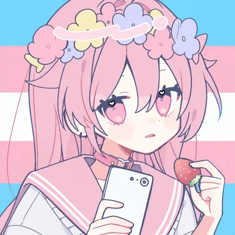

Scroll
About
关于我
你好，我是雨梦。一名热爱技术与创作的跨性别女性。
我相信每个人都有权利成为真正的自己。在这里，我分享我的技术探索、生活感悟，以及在自我认同之路上的每一个脚印。
代码是理性的诗，文字是灵魂的窗。我希望这个小小的空间，能让你感受到温暖与力量。

Be yourself
everyone else is already taken
About
你好，我是雨梦。一名热爱技术与创作的跨性别女性。
我相信每个人都有权利成为真正的自己。在这里，我分享我的技术探索、生活感悟，以及在自我认同之路上的每一个脚印。
代码是理性的诗，文字是灵魂的窗。我希望这个小小的空间，能让你感受到温暖与力量。
